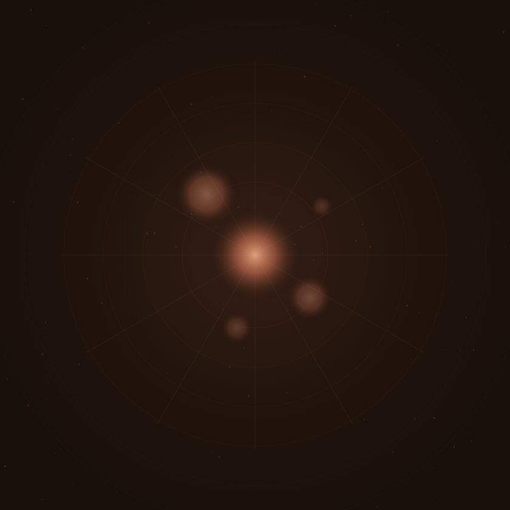
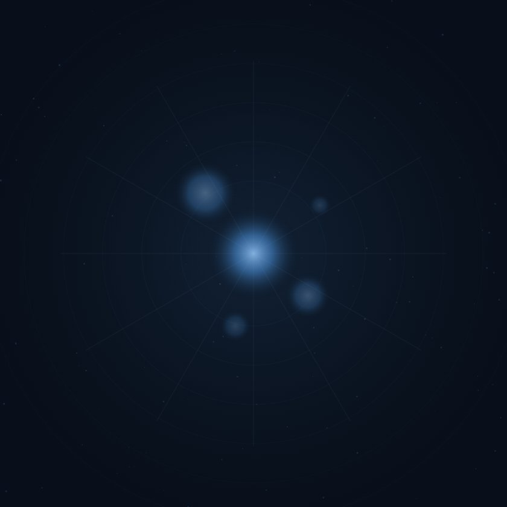
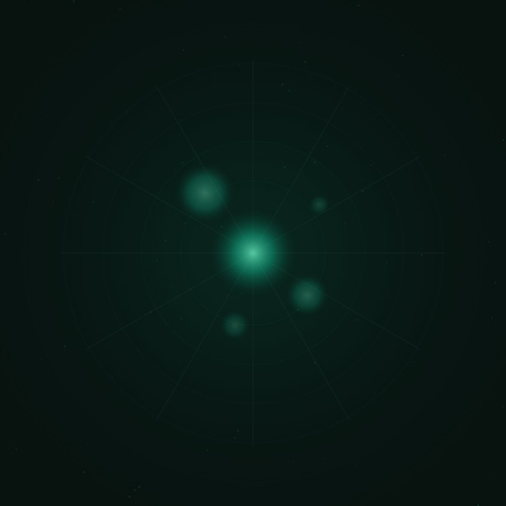
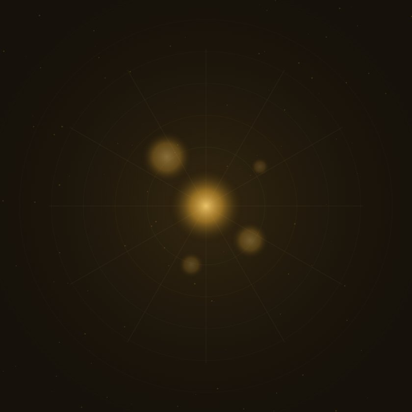
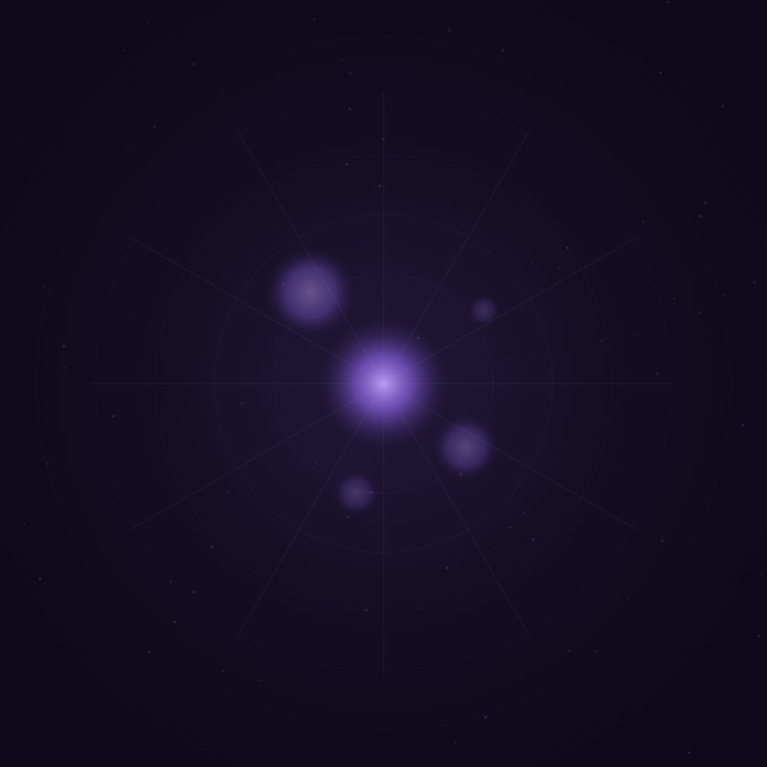

Uma jornada pelas cinco inteligencias artificiais que estao redefinindo como criamos, aprendemos e resolvemos problemas. Scroll para conhecer cada uma delas.
por Anthropic
Claude e um assistente de IA desenvolvido pela Anthropic com foco em seguranca e alinhamento. Projetado para ser util, inofensivo e honesto, ele se destaca pela capacidade de analisar documentos longos, escrever codigo de alta qualidade e manter conversas com contexto extenso.

por Google DeepMind
Gemini e a familia de modelos multimodais do Google, capaz de processar texto, imagens, audio e video nativamente. Integrado profundamente ao ecossistema Google, ele representa a uniao do Google Brain com a DeepMind para criar a IA mais versatil da empresa.

por OpenAI
ChatGPT popularizou a inteligencia artificial generativa para o mundo todo. Baseado nos modelos GPT, ele oferece conversacao natural, geracao de codigo, analise de dados e criacao de conteudo, sendo a IA mais utilizada globalmente com centenas de milhoes de usuarios ativos.

por Google (Gemini 2.5 Flash Image)
Nano Banana e o modelo de geracao e edicao de imagens da familia Gemini, lancado pelo Google em 2025. Famoso pela consistencia ao editar fotos mantendo o personagem original, ele permite trocar fundo, roupa ou estilo sem perder a identidade do rosto.

por Google
NotebookLM e um assistente de pesquisa baseado em IA que transforma seus proprios documentos em uma fonte de conhecimento interativa. Ele le PDFs, artigos e anotacoes, e responde perguntas baseado exclusivamente no material fornecido, ideal para estudo academico e pesquisa.
